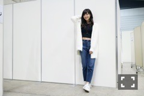

| 2016/11 13 Sun | ラフ。 |
ちはるーむへようこそ！
#chihaOOTD

今日の握手会のコーディネートは
珍しくデニム×スニーカー！
ラフでした◎
でも白のシャギーニットで
冬らしく！あったかく！
おへそが出てるのは少し抜け感をプラスしたくて！
といいつつ少し短すぎちゃった( ◦˙ ˙◦ )笑
・shaggyknit : E hyphen world gallery PEACE
・black tops : ZARA
・denim : Milla Owen
・sneaker : adidas Stan Smith
・choker : Lilly Brown
チョーカーはパールがあしらわれていたり
えんじ色だったり
他のとは全然違う雰囲気なのでお気に入り！
ポイントとして使います◎
ちなみに昨日はこの髪色だったのですが...
(この写真は
カラーエフェクトがかかっているから余計に
金髪みたいになっているけど...)
・befoer

・after
髪の毛もこんなに暗くなったんだよ〜！
冬に向けて暗めカラー。
こうして比べてみると別人みたいで
ちょっと面白いね\( ˆ ˆ )/
そして15th握手会、最後の日でした！
締めくくりの日◎
来てくださった方ありがとうございました。
今日も沢山の方が来て下さって
本当に嬉しかったです...！
心が潤いました。
今年ラストだよ〜って方も多くて
今年はもう会えないのか〜( ˟_˟ )
って少し寂しかったけど
また来年もよろしくね！と言ってくださって
安心しました...\( ˆ ˆ )/！
これからもずっと宜しくお願いします♪
-------------------------♡
♬ ChihaMusic
「花」ORANGE RANGEさん
懐かしい曲。
沢山聞いたな〜
2004年の曲なので
私はまだ小学生低学年だったけど
いい曲だったので好きでした。
特に出だしが好き。
優しさや、愛おしく思っている気持ちが
伝わってくる。
"花びらのように散りゆく中で
夢みたいに 君に出逢えたキセキ"
綺麗な世界観。
美しい。でもとても切ない。
素敵な曲だな〜
また1週間が始まるね！
明日はスーパームーンだよ◎
見れるかなあ〜
おやすみ！
斎藤ちはる
コメント(227)
2016/11/13 23:54